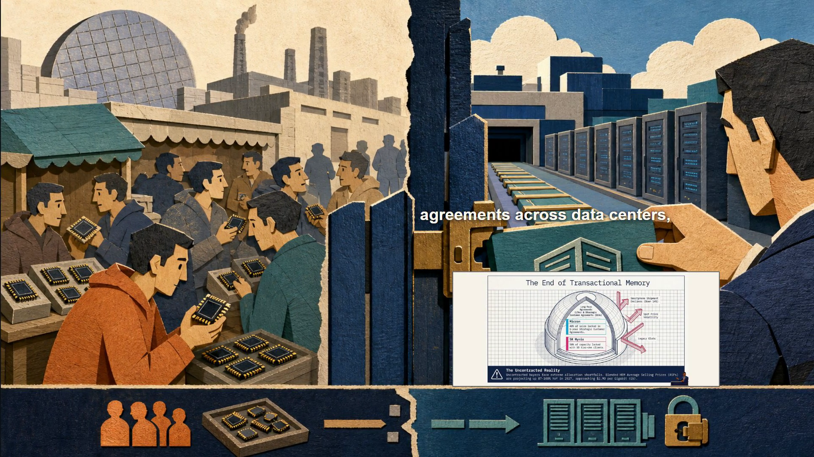

P33 · First-five-minute Gate B review
World plate remains the hero. Each source is a complete teacher-stamped slide, enters one at a time for up to five seconds, and shares an eye-line with word-timed captions.
#07: safe-index feedback + Paper Bubble Mechanics
#08: next-buyer belief + Diagnostic Matrix
#09: cable versus jumpers + Valuation Paradox

#23: changed buyer behavior + contracted-memory evidence
0–300s evidence obligation
| World plate | Time | Status | Evidence |
|---|---|---|---|
| memory-skepticism-v2 | 2.4–9.5s | covered | silicon-antidote-s14-teacher-stamped |
| memory-three-supports-v1 | 12.9–23.0s | covered | silicon-antidote-s11-teacher-stamped |
| index-fund-weighted-inflows-v2 | 23.0–39.1s | covered | silicon-reality-gap-s12-teacher-stamped, silicon-reality-gap-s02-teacher-stamped |
| bottleneck-repricing-v1 | 39.1–53.0s | covered | silicon-value-software-bubble-s01-teacher-stamped |
| sentence-native-beat-01-013-hidden-safe-index-loop-v1 | 53.0–64.9s | covered | silicon-reality-gap-s12-teacher-stamped |
| sentence-native-beat-02-003-next-buyer-belief-v1 | 64.9–70.9s | covered | silicon-antidote-s14-teacher-stamped |
| two-elevator-mechanism-v1 | 70.9–89.8s | covered | silicon-antidote-s02-teacher-stamped |
| index-fund-weighted-inflows-v2 | 97.3–108.2s | covered | silicon-antidote-s10-teacher-stamped |
| hbm-adjacent-accelerator-v1 | 108.2–121.1s | covered | memory-supercycle-s08-teacher-stamped, sovereign-memory-infrastructure-s04-teacher-stamped |
| accelerator-memory-bandwidth-gate-v1 | 121.1–141.1s | covered | memory-supercycle-s02-teacher-stamped |
| hbm-physical-inputs-gate-v1 | 144.6–154.7s | covered | sovereign-memory-infrastructure-s11-teacher-stamped |
| fixed-oven-capacity-wedding-cake-v1 | 154.7–174.7s | exempt | — |
| hbm-physical-inputs-gate-v1 | 178.1–198.1s | covered | memory-supercycle-s08-teacher-stamped, silicon-value-software-bubble-s11-teacher-stamped, silicon-antidote-s10-teacher-stamped |
| hbm-adjacent-accelerator-v1 | 198.1–210.2s | covered | memory-supercycle-s03-teacher-stamped, memory-supercycle-s08-teacher-stamped |
| commodity-cycle-versus-qualified-agreements-v1 | 210.2–230.2s | covered | sovereign-memory-infrastructure-s09-teacher-stamped, silicon-reality-gap-s04-teacher-stamped |
| sentence-native-beat-04-004-changed-customer-behavior-v1 | 230.2–239.7s | covered | memory-supercycle-s06-teacher-stamped |
| buyer-reservation-rail-v1 | 239.7–259.7s | covered | silicon-antidote-s13-teacher-stamped, silicon-value-software-bubble-s07-teacher-stamped, silicon-antidote-s09-teacher-stamped |
| commodity-cycle-versus-qualified-agreements-v1 | 259.7–279.7s | covered | memory-supercycle-s08-teacher-stamped, silicon-antidote-s13-teacher-stamped, memory-supercycle-s03-teacher-stamped |
| sentence-native-beat-04-014-evidence-hierarchy-v2 | 279.7–286.6s | covered | silicon-antidote-s04-teacher-stamped |
| strategic-chokepoint-network-v1 | 286.6–304.2s | covered | sovereign-memory-infrastructure-s05-teacher-stamped, memory-supercycle-s10-teacher-stamped |